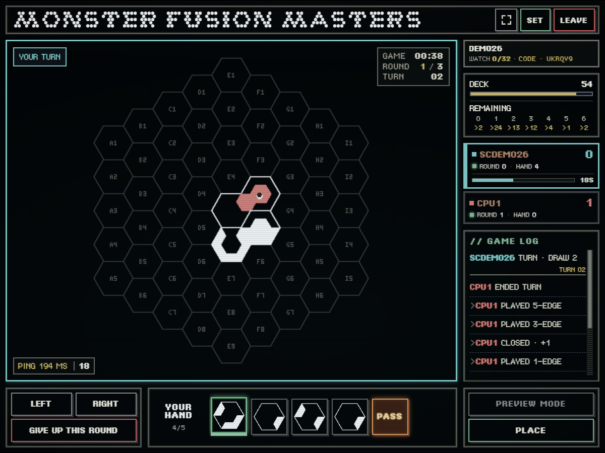

Game encyclopedia
An original tabletop game, now an online hex-board strategy game. Learn to connect tiles, close regions, and make every move count.
01 / GAME VIEWDEMO MATCH

Explore MFM
Your turn, in four steps
- SelectChoose a tile from your hand.
- RotateCheck the direction of its six edges.
- PlaceMatch the colors of every touching edge.
- CloseComplete a white region to earn points.
A board game came first
MFM's board, rules, tiles, scoring and balance originated in the creator's physical tabletop game. The 3D-printable edition was published in 2020. Years later, Codex helped turn the existing design into software. Gameplay and design decisions remain with the original creator.